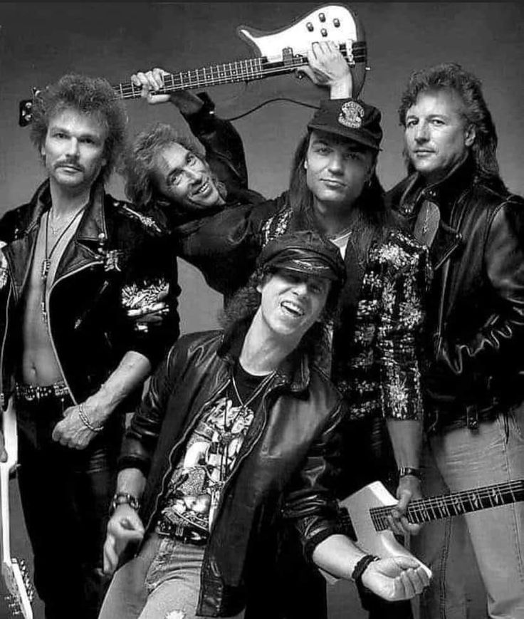

Scorpions — Rock You Like a Hurricane
The legendary German rock band that changed the sound of the 80s

About Scorpions
Formed in 1965 in Hanover, Germany, Scorpions are one of the most iconic rock bands in history. Known for their powerful ballads and electrifying performances, they helped shape hard rock and heavy metal during the 70s and 80s.
Their classic hits like “Wind of Change,” “Still Loving You,” and “Rock You Like a Hurricane” became global anthems, combining emotional depth with unforgettable melodies. The band’s music captured both the wild energy of rock and the tenderness of love and hope.
With over 100 million albums sold worldwide, Scorpions remain one of the best-selling bands of all time. Their influence spans decades, inspiring artists across rock, metal, and even pop music. They continue to perform around the world, proving that rock will never die.
Learn more about Scorpions on their official website .